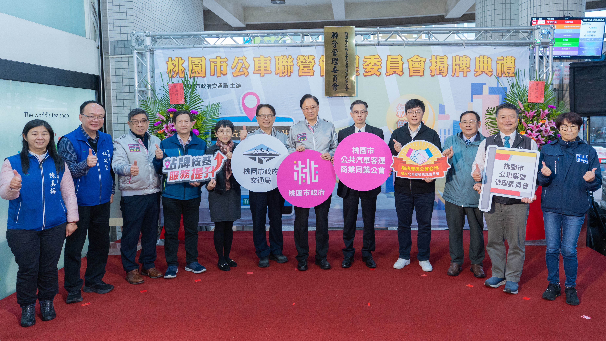

桃園市公車聯營管理委員會（簡稱聯管會），係由桃園市政府、桃園市公共汽車客運商業同業公會及市內公車業者共同成立之協作平台，於 2025年3月31日 正式揭牌成立。聯管會成立目的，在於透過三方合作機制，整合公共運輸資源，提升桃園市公車服務品質，提供市民更便利、友善且優質的乘車環境。
聯管會主要肩負政府與業者間之溝通協調功能，協助推動公車共同事務，促進制度整合與營運優化。現階段重點工作之一為改善市內旗桿式站牌規劃與資訊不一致問題，藉由統一規格、整合資訊及強化管理，逐步提升站牌辨識性與市容品質。
桃園市政府亦指出，未來聯管會將作為重要溝通平台，協助研議公車系統相關配套措施，持續精進整體公共運輸服務。聯管會將秉持服務市民、協調業者、配合政策之精神，持續推動公車服務環境改善，強化公共運輸整體效能，作為桃園市公共汽車客運發展的重要協作機制。